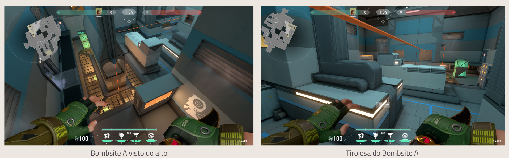

O principal diferencial de Icebox são os muitos - muitos mesmo - altos e baixos do mapa. Praticamente qualquer lugar que você esteja, é possível ficar no chão ou em alguma construção ou caixa mais alta. Isso é algo que causará grande dificuldade aos players no início pois na maioria das vezes estamos acostumados a puxar a mira mais horizontalmente e não verticalmente.
Outro ponto interessante sobre Icebox é que ao mesmo tempo que há diversos lugares bem abertos para uma verdadeira trocação franca - seja nos flancos ou no meio - também existem muitos pixels para se esconder e evitar combate ou então apenas ficar lá para surpreender um adversário. A atenção neste cenário precisará ser redobrada em relação a todos os outros.
Apesar de algumas curvas, a região do meio da Icebox tem um espaço relativamente aberto para trocação de tiro. Neste local os defensores possuem uma vantagem já que tem uma rampa a seu favor e podem ficar apenas com pequenas partes do corpo expostas. No entanto, também existe uma entrada por lá - chamada de duto durante o BETA do mapa - que os atacantes podem entrar rapidamente e ter acesso a pontos chaves. Então, todo cuidado para ambos os lados é pouco.
Bombsite A: Lotado de locais abertos, para se esconder, com muitos altos e baixos e um pequeno labirinto. As opções são muitas por lá.
Uma das maiores novidades dele é a tirolesa, ao invés de uma acorda vertical. Ela permite ir de uma ponta a outra do bombsite e é forte principalmente para os defensores. Isso porque os agentes deslizam muito rápido por ela e chegam rápido ao outro lado.
Bombsite B: Com menos lugares para se esconder, o bombsite B tem um estilo mais aberto para trocação de tiro. Mas não se engane, ele é cheio de caminhos e ainda há sim bons lugares para "marotar".
Nele também existem altos e baixos interessantes, inclusive nestes containers visto na foto abaixo. Qualquer personagem com pulo ou teletransporte como Jett e Omen conseguem subir nele. Outra curiosidade dele é que a área de plantar a spike é bem pequena. Ainda assim ela tem dois andares e é possível realizar diferentes estratégias com isso.
. A Operator pode ser sim uma boa pedida em Icebox por conta dos vários locais abertos. Ao mesmo tempo, um jeito de counterá-la é surpreender o inimigo em lugares mais altos. Como falamos antes, o costume dos jogadores e fazer flicks mais na horizontal e não vertical.
. Na defesa, se aproveite dos muitos altos e baixos e também lugares para se esconder para fazer jogadas em dupla e surpreender adversários.
. Ainda na defesa, não tenha medo de fazer algumas jogadas mais agressivas para pegar um abate e recuar. O mapa permite isso.
. No ataque use o máximo de magias possíveis para limpar posições onde possam ter inimigos. Isso lhe dará uma tranquilidade maior para entrar e se preocupar com menos spots.
. Quando se está no ataque, se puder domine o meio. É possível até mesmo dominar a região de dentro dele para fazer um ataque por ali e pegar inimigos desprevinidos ou preocupados com muitas entradas.
. Mais uma vez no ataque, aproveite os vários caminhos diferentes para se chegar a um mesmo local e faça bastante táticas "split".
. Teste o mapa com seu agente preferido antes de jogá-lo para valer. Lembre-se que ele é bem diferente dos demais e talvez seu personagem preferido seja pouco útil nele.